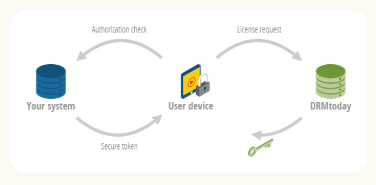

By Carlos Cuevas carlosjcuevasm@gmail.com
Existing key API ↓ Secure key ingestion ↓ DRMToday's secure database ↓ DRMtoday's licensing service ↓ User's Device

Estimates are rough planning placeholders. I don't know the customer's existing tooling, how much DRMtoday-specific work is required, or the process of familiarity with DRMToday.
| Stage | Rough estimate |
|---|---|
| Discovery and baseline | 2–5 days |
| Integration and configuration | 3–10 days |
| Functional testing | 2–5 days |
| Pilot and progressive rollout | 3–5 days |
| Stabilization and decommissioning | 5–10 days |
| Total | 15–35 working days |